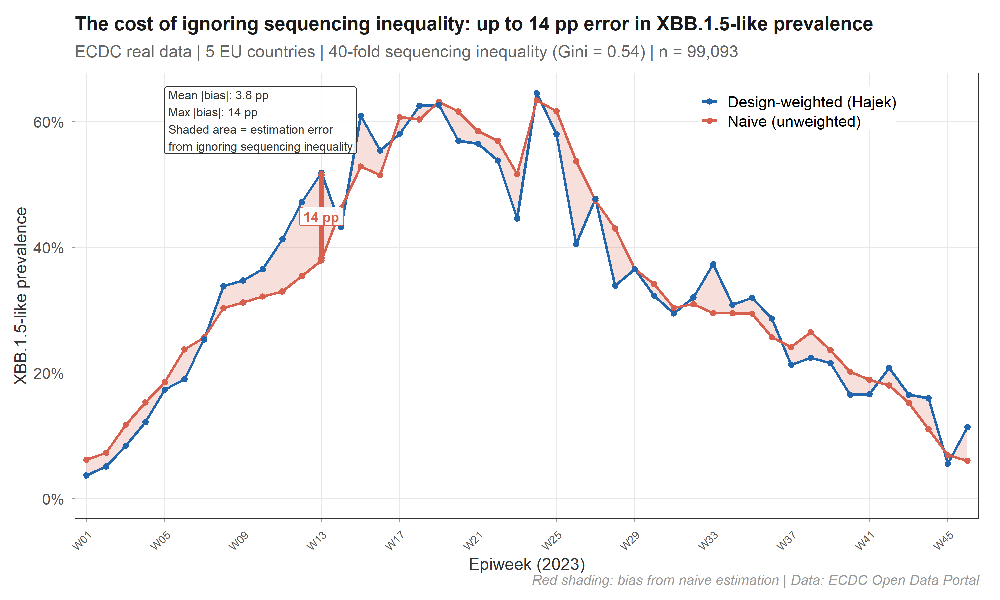
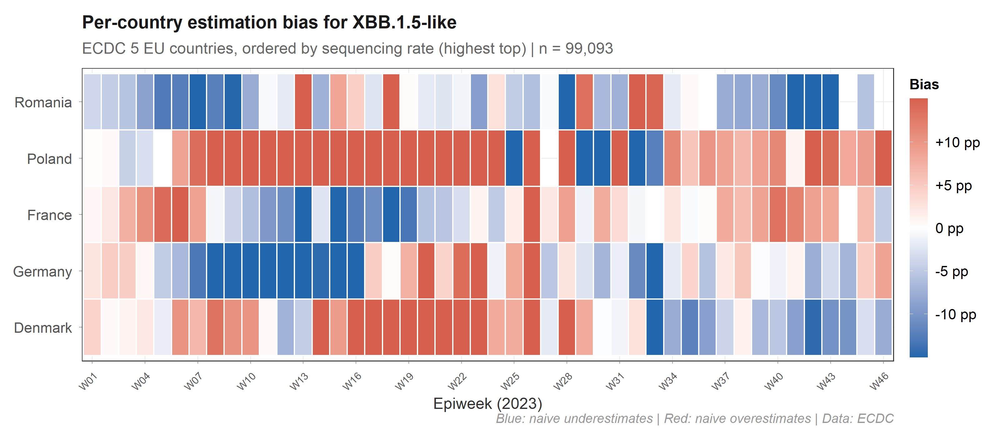
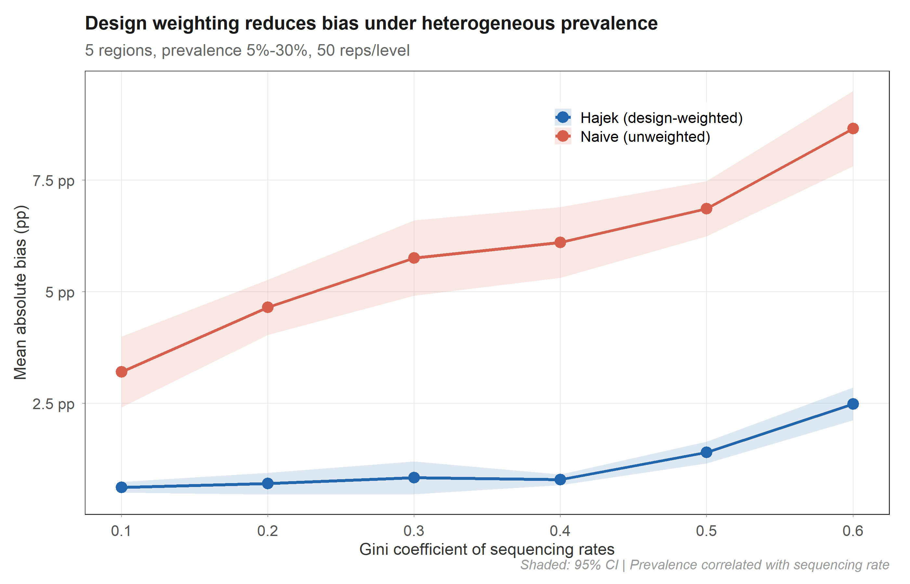

survinger
Design-adjusted inference for pathogen lineage surveillance
under unequal sequencing and reporting delays


The problem
Genomic surveillance systems sequence unevenly. Denmark sequences 12% of cases; Romania sequences 0.3%. If you estimate lineage prevalence by counting sequences, the result is dominated by Denmark — regardless of what is actually circulating across Europe.
On real ECDC data, this produces up to 14 percentage points of error:

The red shaded area is the bias eliminated by design weighting. survinger corrects this using Horvitz-Thompson / Hajek estimators with Wilson score confidence intervals.
The bias is structured, not random

Each country’s bias depends on its sequencing rate and its local prevalence, and both change over time. Poland (under-sequenced, high prevalence) is systematically underweighted by naive methods. A single correction factor cannot fix this — you need per-stratum, per-period weights.
The correction works

In controlled simulation (50 replicates × 6 inequality levels), the Hajek estimator maintains 0.6–2.5 pp absolute bias while the naive estimator reaches 3.2–8.7 pp. The advantage holds across all levels of sequencing inequality.
Quick example
library(survinger)
# Simulate surveillance data (or use your own)
sim <- surv_simulate(n_regions = 5, n_weeks = 26, seed = 42)
# Create design from surveillance data
design <- surv_design(
data = sim$sequences, strata = ~ region,
sequencing_rate = sim$population[c("region", "seq_rate")],
population = sim$population
)
# Corrected prevalence (one line)
surv_lineage_prevalence(design, "BA.2.86")
# Or even simpler — single pipe-friendly call:
surv_estimate(
data = sim$sequences, strata = ~ region,
sequencing_rate = sim$population[c("region", "seq_rate")],
population = sim$population, lineage = "BA.2.86"
)
# Full pipeline with delay correction
delay <- surv_estimate_delay(design)
surv_adjusted_prevalence(design, delay, "BA.2.86")
# How should I allocate 500 sequences?
surv_optimize_allocation(design, "min_mse", total_capacity = 500)
# Is my system powerful enough?
surv_detection_probability(design, true_prevalence = 0.01)
# One-page diagnostic
surv_report(design)Functions
Design & data
| Function | Purpose |
|---|---|
surv_design() |
Create design with inverse-probability weights |
surv_simulate() |
Generate synthetic surveillance data |
surv_filter() |
Subset a design by filter criteria |
surv_update_rates() |
Update sequencing rates |
surv_set_weights() |
Override design weights |
Prevalence estimation
| Function | Purpose |
|---|---|
surv_lineage_prevalence() |
Hajek / HT / post-stratified prevalence |
surv_naive_prevalence() |
Unweighted baseline prevalence |
surv_prevalence_by() |
Prevalence by subgroup (region, source, etc.) |
surv_estimate() |
Pipe-friendly one-call analysis |
Delay correction & nowcasting
| Function | Purpose |
|---|---|
surv_estimate_delay() |
Right-truncation-corrected delay fitting |
surv_reporting_probability() |
Cumulative reporting probability |
surv_nowcast_lineage() |
Delay-adjusted nowcast |
surv_adjusted_prevalence() |
Combined design + delay correction |
Resource allocation
| Function | Purpose |
|---|---|
surv_optimize_allocation() |
Neyman allocation (3 objectives) |
surv_compare_allocations() |
Benchmark all allocation strategies |
surv_required_sequences() |
Sample size for target detection power |
Diagnostics & reporting
| Function | Purpose |
|---|---|
surv_detection_probability() |
Variant detection power |
surv_power_curve() |
Detection probability across prevalence range |
surv_compare_estimates() |
Weighted vs naive side-by-side plot |
surv_design_effect() |
Design effect over time |
surv_sensitivity() |
Sensitivity analysis across all methods |
surv_report() |
Surveillance system diagnostic |
surv_quality() |
One-row quality metrics |
Tidyverse integration
| Function | Purpose |
|---|---|
tidy() / glance()
|
Broom-style tidying for all result objects |
surv_bind() |
Combine multiple prevalence estimates |
surv_table() |
Publication-ready formatted table |
theme_survinger() |
Publication-quality ggplot2 theme |
How it differs from existing tools
| phylosamp | survey | epinowcast | survinger | |
|---|---|---|---|---|
| Question | How many? | General surveys | Bayesian nowcast | Allocate + correct + nowcast |
| Genomic-specific | ✓ | ✗ | Partial | ✓ |
| Allocation | ✗ | ✗ | ✗ | ✓ (3 objectives) |
| Delay correction | ✗ | ✗ | ✓ | ✓ |
| Requires Stan | ✗ | ✗ | ✓ | ✗ |
| CRAN-friendly | ✓ | ✓ | ✗ | ✓ |
Validated on real data
- ECDC: 99,093 sequences, 5 EU countries, 40-fold inequality
- COG-UK: 65,166 individual sequences, 4 UK nations
- Cross-validated against
survey::svymean(exact match) - Wilson CI coverage: 93.4% (Brown et al. 2001 target: 93–95%)
- Delay MLE recovery: 0.5% error at n = 5,000
Vignettes
-
vignette("survinger")— Quick start -
vignette("allocation-optimization")— Resource allocation -
vignette("delay-correction")— Delay estimation and nowcasting -
vignette("real-world-ecdc")— ECDC case study